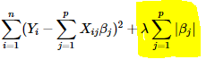
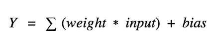
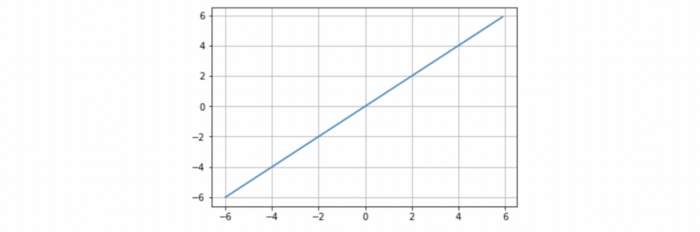
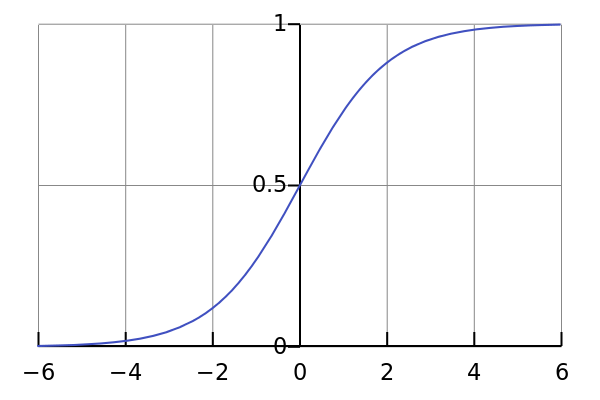
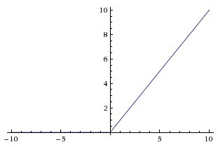

Decision Tree
Goal
The goal is to create a model that predicts the value of a target variable based on several input variables. An example is shown in the diagram. Each interior node corresponds to one of the input variables; there are edges to children for each of the possible values of that input variable. Each leaf represents a value of the target variable given the values of the input variables represented by the path from the root to the leaf.
Split
In the first split or the root, all attributes/features are considered and the training data is divided into groups based on this split. We have X features, so will have X candidate splits. Now we will calculate how much accuracy each split will cost us, using a function. The split that costs least is chosen. This algorithm is recursive in nature as the groups formed can be sub-divided using same strategy. Due to this procedure, this algorithm is also known as the greedy algorithm, as we have an excessive desire of lowering the cost. This makes the root node as best predictor/classifier.

Principle of Naive Bayes Classifier
A Naive Bayes classifier is a probabilistic machine learning model that’s used for classification task. The crux of the classifier is based on the Bayes theorem.
Bayes Theorem
Using Bayes theorem, we can find the probability of A happening, given that B has occurred. Here, B is the evidence and A is the hypothesis. The assumption made here is that the predictors/features are independent. That is presence of one particular feature does not affect the other. Hence it is called naive. Another assumption made here is that all the predictors have an equal effect on the outcome.


KNN steps:
1. Receive an unclassified data;
2. Measure the distance (Euclidian, Manhattan, Minkowski or Weighted) from the new data to all others data that is already classified;
3. Gets the K(K is a parameter that you difine) smaller distances;
4. Check the list of classes had the shortest distance and count the amount of each class that appears;
5. Takes as correct class the class that appeared the most times;
6. Classifies the new data with the class that you took in step 5;
Euclidean distance
The Euclidean distance between points p and q is the length of the line segment connecting them.

What is K?
K represents the number of training data points lying in proximity to the test data point which we are going to use to find the class.
Goal
The objective of the support vector machine algorithm is to find a hyperplane in an N-dimensional space (N — the number of features) that distinctly classifies the data points.

To separate the two classes of data points, there are many possible hyperplanes that could be chosen. Our objective is to find a plane that has the maximum margin, i.e the maximum distance between data points of both classes. Maximizing the margin distance provides some reinforcement so that future data points can be classified with more confidence.
In machine learning, the hinge loss is a loss function used for training classifiers. The hinge loss is used for "maximum-margin" classification, most notably for support vector machines.

Loss Function for SVM :
Given this understanding of the hinge loss function for a SVM, lets add a regularization term (L2 norm) to the cost. The intuition behind the regularization term is that we increase the cost penalty if the values for the weights are high. So while trying to minimize the cost, we not only adjust the weights, we also try to minimize the value of the weights and thereby reduce over fitting to the training data and make the model less sensitive to outliers. So with the added regularization term, the total cost function finally looks like:
Total cost = ||w²||/2 + C*(Sum of all losses for each observation)
Two great articles about SVM:
Support vector machines (intuitive understanding)Support Vector Machine — Introduction to Machine Learning Algorithms
What is Gradient Descent?
Gradient descent is an iterative machine learning optimization algorithm to reduce the cost function so that we have models that makes
accurate predictions. We get optimized weights using gradient descent.
Cost function(C) or Loss function
measures the difference between the actual output and predicted output from the model. Cost function are a convex function.
How can we find the optimized weights?
We randomly initialize all the weights for a neural network to a value close to zero but not zero.
We calculate the gradient, ∂c/∂ω which is a partial derivative of cost with respect to weight.
α is learning rate, helps adjust the weights with respect to gradient descent.
w is the weights for the neurons, α is learning rate, C is the cost and ∂c/∂ω is the gradient
We need to update the weights for all the neurons simultaneously.
Stochastic Gradient Descent
Stochastic Gradient Descent just picks one instance from training set at every step and update gradient only based on that single record. The advantage of Stochastic Gradient Descent is that the algorithm is much faster at every iteration. However, the algorithm produces less regular and stable learning path compared to Batch Gradient Descent. Instead of decreasing smoothly, the cost function will bounce up and down. After rounds of iterations, the algorithm may find a good parameter, but the final result is not necessary global optimal.

What is Logistic Regression?
Logistic regression is a classification algorithm used to assign observations to a discrete set of classes. Some of the examples of classification problems are Email spam or not spam, Online transactions Fraud or not Fraud, Tumor Malignant or Benign. Logistic regression transforms its output using the logistic sigmoid function to return a probability value.
Types of Logistic Regression:
1. Binary Logistic Regression: The categorical response has only two 2 possible outcomes. E.g.: Spam or Not
2. Multinomial Logistic Regression: Three or more categories without ordering. E.g.: Predicting which food is preferred more (Veg, Non-Veg, Vegan)
3. Ordinal Logistic Regression: Three or more categories with ordering. E.g.: Movie rating from 1 to 5
What is the Sigmoid Function?
In order to map predicted values to probabilities, we use the Sigmoid function. The function maps any real value into another value between 0 and 1. In machine learning, we use sigmoid to map predictions to probabilities.
Logistic Function:

Sigmoid Function Graph:

Formula of a sigmoid function:
Cost Function:
Goal
The goal of Regression is to explore the relation between the input Feature with that of the target Value and give us a continuous Valued output for the given unknown data.
Multiple regression Equation:

f(x) = Y = Predicted value/Target Value
x = Input
w = Gradient/slope/Weight
b = Bias
Bias
Bias refers to the error due to the model’s simplistic assumptions in fitting the data. A high bias means that the model is unable to capture the patterns in the data and this results in under-fitting.
How do we determine the weights?
The weights are are measured by MSE (Mean Squared Error) and adjusting them to get a best possible Linear line.

The ‘red line’ is our linear regression line or our predicted value(y’). And the ‘blue’ points are our given data or actual value. The average of square of distance from the
blue points(actual value) to the red line(predicted value) must be minimum to get the best fit regression line.
Thus can be represented as:
To gain optimal result we need to minimize MSE.
So to minimize this error or MSE we use gradient descent to find the weights after MSE or error rate calculation. Gradient Descent can be Equated as :
Now after we get the Gradient descent we need to update the weight every time until we get the best fitted value.

What is Regression?
Regression analysis is a form of predictive modelling technique which investigates the relationship between a dependent and independent variable.
The above definition is a bookish definition, in simple terms the regression can be defined as, “Using the relationship between variables to find the best fit line or the regression equation that can be used to
make predictions”.
What happens if we know that our data is correlated, but the relationship doesn’t look linear? So hence depending on what the data looks like, we can do a polynomial regression on the data to fit a polynomial equation to it.


Hence If we try to use a simple linear regression in the above graph then the linear regression line won’t fit very well. It is very difficult to fit a linear regression line in the above graph with a low value of error. Hence we can try to use the polynomial
regression to fit a polynomial line so that we can achieve a minimum error or minimum cost function. The general equation of a polynomial regression is:
Y=θo + θ₁X + θ₂X² + … + θₘXᵐ + residual error
Advantages of using Polynomial Regression:
Polynomial provides the best approximation of the relationship between the dependent and independent variable.
A Broad range of function can be fit under it.
Polynomial basically fits a wide range of curvature.
Disadvantages of using Polynomial Regression:
The presence of one or two outliers in the data can seriously affect the results of the nonlinear analysis.
These are too sensitive to the outliers.
In addition, there are unfortunately fewer model validation tools for the detection of outliers in nonlinear regression than there are for linear regression.
Explanation:
If your linear model contains many predictor variables or if these variables are correlated, the traditional OLS parameter estimates have large variance, thus making the model unreliable. This leads to an over-fitted model. A penalty term causes the regression
coefficients for these unimportant variables to shrink towards zero. This process allows the model to identify the variables strongly associated with the output variable, thereby reducing the variance.
Lasso Regression (Least Absolute Shrinkage and Selection Operator) adds “absolute value of magnitude” of coefficient as penalty term to the loss function.
If lambda is zero then we will get back OLS whereas very large value will make coefficients zero hence it will under-fit.

If lambda is zero then we will get back OLS (Ordinary Least Squares) whereas very large value will make coefficients zero hence it will under-fit.
Explanation:
Ridge regression adds “squared magnitude” of coefficient as penalty term to the loss function. Here the highlighted part represents L2 regularization element.

If lambda is zero then you can imagine we get back OLS. However, if lambda is very large then it will add too much weight and it will lead to under-fitting. Having said that it’s important how lambda is chosen. This technique works very well to avoid over-fitting issue.
Learning process of a neural network
Neural network is made up of neurons connected to each other; at the same time, each connection of our neural network is associated with a weight that dictates the importance of this relationship in the neuron when multiplied by the input value.
Each neuron has an activation function that defines the output of the neuron. The activation function is used to introduce non-linearity in the modeling capabilities of the network.
Training our neural network, that is, learning the values of our parameters (weights wij and bj biases) is the most genuine part of Deep Learning and we can see this learning process in a neural network as an iterative process of “going and return” by the layers of neurons. The “going”
is a forwardpropagation of the information and the “return” is a backpropagation of the information.
The first phase forwardpropagation occurs when the network is exposed to the training data and these cross the entire neural network for their predictions (labels) to be calculated. That is, passing the input data through the network in such a way that all the neurons apply their transformation
to the information they receive from the neurons of the previous layer and sending it to the neurons of the next layer. When the data has crossed all the layers, and all its neurons have made their calculations, the final layer will be reached with a result of label prediction for those input examples.
Next, we will use a loss function to estimate the loss (or error) and to compare and measure how good/bad our prediction result was in relation to the correct result (remember that we are in a supervised learning environment and we have the label that tells us the expected value). Ideally, we want our cost to be zero, that is, without
divergence between estimated and expected value. Therefore, as the model is being trained, the weights of the interconnections of the neurons will gradually be adjusted until good predictions are obtained.
Once the loss has been calculated, this information is propagated ba730ckwards. Hence, its name: backpropagation. Starting from the output layer, that loss information propagates to all the neurons in the hidden layer that contribute directly to the output. However, the neurons of the hidden layer only receive a fraction of the total
signal of the loss, based on the relative contribution that each neuron has contributed to the original output. This process is repeated, layer by layer, until all the neurons in the network have received a loss signal that describes their relative contribution to the total loss.
Now that we have spread this information back, we can adjust the weights of connections between neurons.What we are doing is making the loss as close as possible to zero the next time we go back to using the network for a prediction. For this, we will use a technique called gradient descent. This technique changes the weights in small increments with the help of the
calculation of the derivative (or gradient) of the loss function, which allows us to see in which direction “to descend” towards the global minimum; this is done in general in batches of data in the successive iterations (epochs) of all the dataset that we pass to the network in each iteration.
To recap, the learning algorithm consists of:
1. Start with values (often random) for the network parameters (wij weights and bj biases).
2. Take a set of examples of input data and pass them through the network to obtain their prediction.
3. Compare these predictions obtained with the values of expected labels and calculate the loss with them.
4. Perform the backpropagation in order to propagate this loss to each and every one of the parameters that make up the model of the neural network.
5. Use this propagated information to update the parameters of the neural network with the gradient descent in a way that the total loss is reduced and a better model is obtained.
6. Continue iterating in the previous steps until we consider that we have a good model.
Activation function
So what does an artificial neuron do? Simply put, it calculates a “weighted sum” of its input, adds a bias and then decides whether it should be “fired” or not.
So consider a neuron.

Now, the value of Y can be anything ranging from -inf to +inf. The neuron really doesn’t know the bounds of the value. So how do we decide whether the neuron should fire or not ( why this firing pattern? Because we learnt it from biology that’s the way brain works and brain is a working testimony of an awesome and intelligent system ).
We decided to add “activation functions” for this purpose. To check the Y value produced by a neuron and decide whether outside connections should consider this neuron as “fired” or not. Or rather let’s say — “activated” or not.
Activation functions:
We use the activation functions to propagate the output of a neuron forward. This output is received by the neurons of the next layer to which this neuron is connected (up to the output layer included). As we have said, the activation function serves to introduce non-linearity in the modeling capabilities of the network.
1.Linear function:
A straight line function where activation is proportional to input ( which is the weighted sum from neuron ).
This way, it gives a range of activations, so it is not binary activation. We can definitely connect a few neurons together and if more than 1 fires, we could take the max ( or softmax) and decide based on that. So that is ok too. Then what is the problem with this?
If you are familiar with gradient descent for training, you would notice that for this function, derivative is a constant.
A = cx, derivative with respect to x is c. That means, the gradient has no relationship with X. It is a constant gradient and the descent is going to be on constant gradient. If there is an error in prediction, the changes made by back propagation is constant and not depending on the change in input delta(x)!
This is not that good!. There is another problem too. Think about connected layers. Each layer is activated by a linear function. That activation in turn goes into the next level as input and the second layer calculates weighted sum on that input and it in turn, fires based on another linear activation function.
No matter how many layers we have, if all are linear in nature, the final activation function of last layer is nothing but just a linear function of the input of first layer! Pause for a bit and think about it.
That means these two layers ( or N layers ) can be replaced by a single layer. Ah! We just lost the ability of stacking layers this way. No matter how we stack, the whole network is still equivalent to a single layer with linear activation ( a combination of linear functions in a linear manner is still another linear function ).

2. Sigmoid function:

Well, this looks smooth and “step function like”. What are the benefits of this? Think about it for a moment. First things first, it is nonlinear in nature. Combinations of this function are also nonlinear! Great. Now we can stack layers. What about non binary activations? Yes, that too!. It will give an analog activation unlike step function. It has a smooth gradient too.
And if you notice, between X values -2 to 2, Y values are very steep. Which means, any small changes in the values of X in that region will cause values of Y to change significantly. Ah, that means this function has a tendency to bring the Y values to either end of the curve.
Looks like it’s good for a classifier considering its property? Yes ! It indeed is. It tends to bring the activations to either side of the curve ( above x = 2 and below x = -2 for example). Making clear distinctions on prediction.
Another advantage of this activation function is, unlike linear function, the output of the activation function is always going to be in range (0,1) compared to (-inf, inf) of linear function. So we have our activations bound in a range. Nice, it won’t blow up the activations then.
This is great. Sigmoid functions are one of the most widely used activation functions today. Then what are the problems with this?
If you notice, towards either end of the sigmoid function, the Y values tend to respond very less to changes in X. What does that mean? The gradient at that region is going to be small. It gives rise to a problem of “vanishing gradients”. Hmm. So what happens when the activations reach near the “near-horizontal” part of the curve on either sides?
Gradient is small or has vanished ( cannot make significant change because of the extremely small value ). The network refuses to learn further or is drastically slow ( depending on use case and until gradient /computation gets hit by floating point value limits ). There are ways to work around this problem and sigmoid is still very popular in classification problems.
3. Tanh Function:
 Ok, now this has characteristics similar to sigmoid that we discussed above. It is nonlinear in nature, so great we can stack layers! It is bound to range (-1, 1) so no worries of activations blowing up. One point to mention is that the gradient is stronger for tanh than sigmoid ( derivatives are steeper). Deciding between the sigmoid or tanh will depend on your requirement of gradient strength. Like sigmoid, tanh also has the vanishing gradient problem.
Ok, now this has characteristics similar to sigmoid that we discussed above. It is nonlinear in nature, so great we can stack layers! It is bound to range (-1, 1) so no worries of activations blowing up. One point to mention is that the gradient is stronger for tanh than sigmoid ( derivatives are steeper). Deciding between the sigmoid or tanh will depend on your requirement of gradient strength. Like sigmoid, tanh also has the vanishing gradient problem.
Tanh is also a very popular and widely used activation function.
3. ReLu Function:
A(x) = max(0,x)
The ReLu function is as shown above. It gives an output x if x is positive and 0 otherwise.

At first look this would look like having the same problems of linear function, as it is linear in positive axis. First of all, ReLu is nonlinear in nature. And combinations of ReLu are also non linear! ( in fact it is a good approximator. Any function can be approximated with combinations of ReLu). Great, so this means we can stack layers. It is not bound though. The range of ReLu is [0, inf). This means it can blow up the activation.
Another point that I would like to discuss here is the sparsity of the activation. Imagine a big neural network with a lot of neurons. Using a sigmoid or tanh will cause almost all neurons to fire in an analog way. That means almost all activations will be processed to describe the output of a network. In other words the activation is dense. This is costly. We would ideally want a few neurons in the network to not activate and thereby making the activations sparse and efficient.
ReLu give us this benefit. Imagine a network with random initialized weights ( or normalised ) and almost 50% of the network yields 0 activation because of the characteristic of ReLu ( output 0 for negative values of x ). This means a fewer neurons are firing ( sparse activation ) and the network is lighter. Woah, nice! ReLu seems to be awesome! Yes it is, but nothing is flawless.. Not even ReLu.
Because of the horizontal line in ReLu( for negative X ), the gradient can go towards 0. For activations in that region of ReLu, gradient will be 0 because of which the weights will not get adjusted during descent. That means, those neurons which go into that state will stop responding to variations in error/ input ( simply because gradient is 0, nothing changes ). This is called dying ReLu problem. This problem can cause several neurons to just die and not respond making a substantial part of the network passive. There are variations in ReLu to mitigate this issue by simply making the horizontal line into non-horizontal component . for example y = 0.01x for x < 0 will make it a slightly inclined line rather than horizontal line. This is leaky ReLu. There are other variations too. The main idea is to let the gradient be non zero and recover during training eventually.
ReLu is less computationally expensive than tanh and sigmoid because it involves simpler mathematical operations. That is a good point to consider when we are designing deep neural nets.
3. Softmax Function:
Softmax function, a wonderful activation function that turns numbers aka logits into probabilities that sum to one. Softmax function outputs a vector that represents the probability distributions of a list of potential outcomes.
Because Softmax function outputs numbers that represent probabilities, each number’s value is between 0 and 1 valid value range of probabilities. The range is denoted as [0,1]. The numbers are zero or positive. The entire output vector sums to 1. That is to say when all probabilities are accounted for, that’s 100%.
The essential goal of softmax is to turn numbers into probabilities.
Loss function
Loss function helps in optimizing the parameters of the neural networks. Our objective is to minimize the loss for a neural network by optimizing its parameters(weights). The loss is calculated using loss function by matching the target(actual) value and predicted value by a neural network. Then we use the gradient descent method to optimize the weights of the network such that the loss is minimized. This is how we train a neural network.
Loss functions:
1. Mean Squared Error:
When you have a regression task, one of the loss function you can go ahead is this one. As the name suggests, this loss is calculated by taking the mean of squared differences between actual(target) and predicted values.
For Example, you have a neural network with which takes some data related to house and predicts it’s price. In this case, you can use the MSE loss. Basically, in the case where the output is a real number, you should use this loss function.
2. Binary Crossentropy:
When you have a binary classification task, one of the loss function you can go ahead is this one. If you are using BCE loss function, you just need one output node to classify the data into two classes. The output value should be passed through a sigmoid activation function so the output is in the range of (0–1).
For example, you have a neural network which takes data related to atmosphere and predicts whether it will rain or not. If the output is greater than 0.5, the network classifies it as rain and if the output is less than 0.5, the network classifies it as not rain. (it could be opposite depending upon how you train the network). More the probability score value, more the chance of raining.

While training the network, the target value fed to the network should be 1 if it is raining otherwise 0.
One important thing, if you are using BCE loss function the output of the node should be between (0–1). It means you have to use sigmoid activation function on your final output. Since sigmoid converts any real value in the range between (0–1).
What if you are not using sigmoid activation on the final layer? Then you can pass an argument called from logits as true to the loss function and it will internally apply the sigmoid to the output value.
3. Categorical Crossentropy:
When you have a multi-class classification task, one of the loss function you can go ahead is this one. If you are using CCE loss function, there must be the same number of output nodes as the classes. And the final layer output should be passed through a softmax activation so that each node output a probability value between (0–1).
For example, you have a neural network which takes an image and classifies it into a cat or dog. If cat node has high probability score then the image is classified into cat otherwise dog. Basically, whichever class node has the highest probability score, the image is classified into that class.
For feeding the target value at the time of training, you have to one hot encode them. If the image is of cat then target vector would be (1, 0) and if the image is of dog, target vector would be (0, 1). Basically, target vector would be of the same size as the number of classes and the index position corresponding to the actual class would be 1 and all other would be zero.
What if you are not using softmax activation on the final layer? Then you can pass an argument called from logits as true to the loss function and it will internally apply the softmax to the output value. Same as in the above case.
4. Sparse Categorical Crossentropy:
This loss function is almost similar to CCE except for one change.
When you are using SCCE loss function, you do not need to one hot encode the target vector. If the target image is of a cat, you simply pass 0, otherwise 1. Basically, whichever the class is you just pass the index of that class.

Optimization
Optimization is a process of searching for parameters that minimize or maximize our functions. When we train machine learning model, we usually use indirect optimization. We choose a certain metric — like accuracy, precision or recall — which indicates how well our model solves a given problem. However, we are optimizing a different cost function J(θ) and hope that minimizing its value
will improve metric we care about. Of course, the choice of the cost function is usually related to the specific problem that we aim to tackle. Essentially, it’s deliberately designed to indicate how far from an ideal solution we are. As you can imagine, this topic is quite complicated and is a great topic for a separate article.
Traps along the way
It turns out though, that very often finding a minimum of non-convex cost functions is not easy, and we have to use advanced optimization strategies to locate them. If you have learned differential calculus, you certainly know the concept of local minimum — these are some of the biggest traps that our optimizer can fall into. For those who have not yet come across this wonderful part of the mathematics, I will only say that these are the points where function takes a minimum value, but only in a given region. An example of such a situation is shown on the left hand side of the figure above. We can clearly see that the point located by the optimizer is not the most optimal solution overall.
Overcoming the so-called saddle points is often considered to be even more challenging. These are plateaus, where the value of the cost function is almost constant. This situation is illustrated on the right-hand side of the same figure. At these points the gradient is almost zeroed in all directions making it impossible to escape.
Sometimes, especially in the case of multi-layer networks, we may have to deal with regions where the cost function is very steep. In such places the value of the gradient drastically increases — the exploding gradient — what leads to taking huge steps, often ruining the entire previous optimization. However, this problem can be easily avoided by gradient clipping — defining the maximum allowed gradient value.
Optimizers:
1. Gradient descent
Before we get to know more advanced algorithms, let’s take a look at some of basic strategies. Probably one of the most straightforward approaches is to simply go in direction opposite to the gradient. This strategy can be described by the following equation.
Where α is a hyperparameter called learning rate, which translates into the length of the step that we will take in each iteration. Its selection expresses — in a certain extent — a compromise between the speed of learning and the accuracy of the result that can be obtained. Choosing too small step leads us to tedious calculations and the necessity of performing much more iterations. On the other hand, however, choosing too high value can effectively prevent us from finding the minimum. Such a situation is presented in the Figure 2 — we can see how in subsequent iterations we bounce around, not being able to stabilize. Meanwhile, the model where appropriate step was defined, found at a minimum almost immediately.
In addition, this algorithm is vulnerable to previously described problems of saddle points. Since the size of the correction performed in subsequent iterations is proportional to the calculated gradient, we will not be able to escape from the plateau.
Finally, to top it all off, the algorithm is ineffective — it requires the use of the entire training set in each iteration. This means that in every epoch we have to look at all the examples in order to perform next optimisation step. This may not be a problem when the training set consists of several thousand examples, but as I mentioned in one of my articles — neural networks work best when they have millions of records at their disposal. In that case, it is hard to imagine that in every iteration we use the whole set. It would be a waste of both time and computer memory. All these factors cause that gradient descent, in its purest form, does not work in most cases.
1.1 Stochastic Gradient descent
Go to classification algorithms -> SGD
1.2 Mini-batch gradient descent
Mini-batch gradient is a variation of stochastic gradient descent where instead of single training example, mini-batch of samples is used.
Mini batch gradient descent is widely used and converges faster and is more stable.
Batch size can vary depending on the dataset.
As we take a batch with different samples,it reduces the noise which is variance of the weight updates and that helps to have a more stable converge faster.
Momentum
Momentum is like a ball rolling downhill. The ball will gain momentum as it rolls down the hill.

Momentum helps accelerate Gradient Descent(GD) when we have surfaces that curve more steeply in one direction than in another direction. It also dampens the oscillation as shown above
For updating the weights it takes the gradient of the current step as well as the gradient of the previous time steps. This helps us move faster towards convergence.
Convergence happens faster when we apply momentum optimizer to surfaces with curves.
Momentum